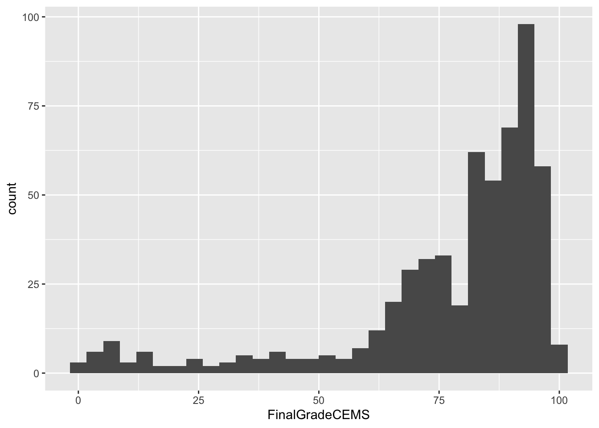
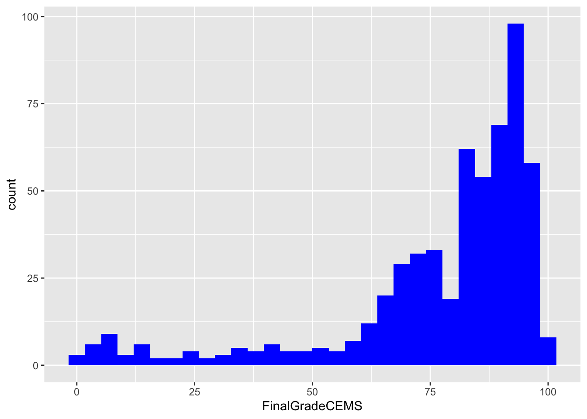

knitr::include_graphics("img/laser-cycle.png")
ECI 586 Intro to Learning Analytics
Welcome to using ECI 586: An Introduction to Learning Analytics! During the third week of each unit, we’ll complete a basic research workflow, or data analysis process, modeled after an actual learning analytics study. This getting started task is designed to orient you to both our data analysis assignments and to R, RStudio, and/or RMarkdown, which we’ll be using to complete those assignments.
We’ll be using RStudio Cloud, which has all of the functionality of the desktop version of RStudio, and some additional benefits for the those new to R, such as the installation of packages and the simplification of file directories. If you’re new to R, I highly recommend it.
You are also welcome to use RStudio desktop, and you can download this project on our course workspace by clicking the “Export” button shown in the following screenshot:

This independent practice is really a warm-up. It is a chance to become familiar with how RStudio works. In the context of doing so, we’ll focus on three things:
You may be wondering what these bolded terms refer to; what’s so special about preparing, wrangling, exploring, and modeling data - and communicating results? We’re using these terms as a part of a framework, or workflow, that comes from the work of Krumm et al.’s Learning Analytics Goes to School.
You can check that out (literally, it’s available online through the NCSU Library), but don’t feel any need to dive deep for now - we’ll be spending more time on this process throughout the course. For now, know that this document is organized around these five components of the Data Intensive Research Workflow.
Click the arrow to the right of the code chunk below to view the image (more on that process of clicking the green arrow and what it does, too, in a moment)!
knitr::include_graphics("img/laser-cycle.png")
This documents is an Quarto Markdown (.qmd) file that can be used to run code and generate a wide range of file format outputs. There are two keys to your use of it:
Let’s get started!
By preparing, we refer to developing a question or purpose for the analysis, which can be surprisingly difficult when considering its utility for helping educators improve teaching and learning! This part of the process also involves developing an understanding of the data and what you may need to analyze the data. Often this involves looking at the data and its documentation. For now, we’ll focus on just a few parts of this process, diving in much more deeply over the coming weeks.
R uses “packages,” add-ons that enhance its functionality. One package that we’ll be using is the tidyverse. The {tidyverse} package is actually a collection of R packages designed for reading, wrangling, and exploring data and which all share an underlying design philosophy, grammar, and data structures.
Before we can begin using these packages, we will need to install them using the install.packages() function built into R.
Click the green arrow in the right corner of the block-or “chunk”-of code that follows and see if you can identify which packages have been installed in the console below.
install.packages("tidyverse")Once these packages have been installed, we will need to load them in order to use the handy functions they contain.
To load the tidyverse, click the green arrow in the right corner of the block-or “chunk”-of code that follows. Notice that we do not need to use the quotation marks again because the {tidyverse} package and packages it contains are now a part of our package library!
library(tidyverse)── Attaching packages ─────────────────────────────────────── tidyverse 1.3.2 ──
✔ ggplot2 3.3.6 ✔ purrr 0.3.4
✔ tibble 3.1.8 ✔ dplyr 1.0.9
✔ tidyr 1.2.0 ✔ stringr 1.4.0
✔ readr 2.1.2 ✔ forcats 0.5.1
── Conflicts ────────────────────────────────────────── tidyverse_conflicts() ──
✖ dplyr::filter() masks stats::filter()
✖ dplyr::lag() masks stats::lag()Please do not worry if you saw a number of messages: those probably mean that the tidyverse loaded just fine. If you see an error, though, try to interpret or search via your search engine the contents of the error, or reach out to us for assistance.
Next, we’ll load data - specifically, a CSV file, the kind that you can export from Microsoft Excel or Google Sheets - into R, using the read_csv() function in the next chunk.
Clicking the green arrow runs the code; do that next.
d <- read_csv("data/sci-online-classes.csv")Rows: 603 Columns: 30
── Column specification ────────────────────────────────────────────────────────
Delimiter: ","
chr (6): course_id, subject, semester, section, Gradebook_Item, Gender
dbl (23): student_id, total_points_possible, total_points_earned, percentage...
lgl (1): Grade_Category
ℹ Use `spec()` to retrieve the full column specification for this data.
ℹ Specify the column types or set `show_col_types = FALSE` to quiet this message.Notice that we “assigned” our data set to a new object in R named d that will now be saved in your environment pane in the upper right corner of RStudio. Go ahead and take a look to make sure it’s there.
Why do you think we included data/ before our sci-online-classes.csv file? Why quotation marks?
Add your responses after the dashes below:
Hint: check the files pane in the lower right corner of RStudio.
Last, let’s check that the code worked as we intended; run the next chunk and look at the results, tabbing left or right with the arrows, or scanning through the rows by clicking the numbers at the bottom of the pane with the print-out of the data you loaded:
d# A tibble: 603 × 30
student_id course_id total…¹ total…² perce…³ subject semes…⁴ section Grade…⁵
<dbl> <chr> <dbl> <dbl> <dbl> <chr> <chr> <chr> <chr>
1 43146 FrScA-S21… 3280 2220 0.677 FrScA S216 02 POINTS…
2 44638 OcnA-S116… 3531 2672 0.757 OcnA S116 01 ATTEMP…
3 47448 FrScA-S21… 2870 1897 0.661 FrScA S216 01 POINTS…
4 47979 OcnA-S216… 4562 3090 0.677 OcnA S216 01 POINTS…
5 48797 PhysA-S11… 2207 1910 0.865 PhysA S116 01 POINTS…
6 51943 FrScA-S21… 4208 3596 0.855 FrScA S216 03 POINTS…
7 52326 AnPhA-S21… 4325 2255 0.521 AnPhA S216 01 POINTS…
8 52446 PhysA-S11… 2086 1719 0.824 PhysA S116 01 POINTS…
9 53447 FrScA-S11… 4655 3149 0.676 FrScA S116 01 POINTS…
10 53475 FrScA-S11… 1710 1402 0.820 FrScA S116 02 POINTS…
# … with 593 more rows, 21 more variables: Grade_Category <lgl>,
# FinalGradeCEMS <dbl>, Points_Possible <dbl>, Points_Earned <dbl>,
# Gender <chr>, q1 <dbl>, q2 <dbl>, q3 <dbl>, q4 <dbl>, q5 <dbl>, q6 <dbl>,
# q7 <dbl>, q8 <dbl>, q9 <dbl>, q10 <dbl>, TimeSpent <dbl>,
# TimeSpent_hours <dbl>, TimeSpent_std <dbl>, int <dbl>, pc <dbl>, uv <dbl>,
# and abbreviated variable names ¹​total_points_possible,
# ²​total_points_earned, ³​percentage_earned, ⁴​semester, ⁵​Gradebook_Item
# ℹ Use `print(n = ...)` to see more rows, and `colnames()` to see all variable namesWhat do you notice about this dataset? What do you wonder? Add one or two thoughts after the dash below:
There are other ways to inspect your data; the glimpse() function provides one such way. Run the code below to take a glimpse at your data.
glimpse(d)Rows: 603
Columns: 30
$ student_id <dbl> 43146, 44638, 47448, 47979, 48797, 51943, 52326,…
$ course_id <chr> "FrScA-S216-02", "OcnA-S116-01", "FrScA-S216-01"…
$ total_points_possible <dbl> 3280, 3531, 2870, 4562, 2207, 4208, 4325, 2086, …
$ total_points_earned <dbl> 2220, 2672, 1897, 3090, 1910, 3596, 2255, 1719, …
$ percentage_earned <dbl> 0.6768293, 0.7567261, 0.6609756, 0.6773345, 0.86…
$ subject <chr> "FrScA", "OcnA", "FrScA", "OcnA", "PhysA", "FrSc…
$ semester <chr> "S216", "S116", "S216", "S216", "S116", "S216", …
$ section <chr> "02", "01", "01", "01", "01", "03", "01", "01", …
$ Gradebook_Item <chr> "POINTS EARNED & TOTAL COURSE POINTS", "ATTEMPTE…
$ Grade_Category <lgl> NA, NA, NA, NA, NA, NA, NA, NA, NA, NA, NA, NA, …
$ FinalGradeCEMS <dbl> 93.45372, 81.70184, 88.48758, 81.85260, 84.00000…
$ Points_Possible <dbl> 5, 10, 10, 5, 438, 5, 10, 10, 443, 5, 12, 10, 5,…
$ Points_Earned <dbl> NA, 10.00, NA, 4.00, 399.00, NA, NA, 10.00, 425.…
$ Gender <chr> "M", "F", "M", "M", "F", "F", "M", "F", "F", "M"…
$ q1 <dbl> 5, 4, 5, 5, 4, NA, 5, 3, 4, NA, NA, 4, 3, 5, NA,…
$ q2 <dbl> 4, 4, 4, 5, 3, NA, 5, 3, 3, NA, NA, 5, 3, 3, NA,…
$ q3 <dbl> 4, 3, 4, 3, 3, NA, 3, 3, 3, NA, NA, 3, 3, 5, NA,…
$ q4 <dbl> 5, 4, 5, 5, 4, NA, 5, 3, 4, NA, NA, 5, 3, 5, NA,…
$ q5 <dbl> 5, 4, 5, 5, 4, NA, 5, 3, 4, NA, NA, 5, 4, 5, NA,…
$ q6 <dbl> 5, 4, 4, 5, 4, NA, 5, 4, 3, NA, NA, 5, 3, 5, NA,…
$ q7 <dbl> 5, 4, 4, 4, 4, NA, 4, 3, 3, NA, NA, 5, 3, 5, NA,…
$ q8 <dbl> 5, 5, 5, 5, 4, NA, 5, 3, 4, NA, NA, 4, 3, 5, NA,…
$ q9 <dbl> 4, 4, 3, 5, NA, NA, 5, 3, 2, NA, NA, 5, 2, 2, NA…
$ q10 <dbl> 5, 4, 5, 5, 3, NA, 5, 3, 5, NA, NA, 4, 4, 5, NA,…
$ TimeSpent <dbl> 1555.1667, 1382.7001, 860.4335, 1598.6166, 1481.…
$ TimeSpent_hours <dbl> 25.91944500, 23.04500167, 14.34055833, 26.643610…
$ TimeSpent_std <dbl> -0.18051496, -0.30780313, -0.69325954, -0.148446…
$ int <dbl> 5.0, 4.2, 5.0, 5.0, 3.8, 4.6, 5.0, 3.0, 4.2, NA,…
$ pc <dbl> 4.50, 3.50, 4.00, 3.50, 3.50, 4.00, 3.50, 3.00, …
$ uv <dbl> 4.333333, 4.000000, 3.666667, 5.000000, 3.500000…Generally, rows typically represent “cases,” the units that we measure, or the units on which we collect data. What counts as a “case” (and therefore what is represented as a row) varies by (and within) fields. There may be multiple types or levels of units studied in your field; listing more than one is fine! Also, please consider what columns - which usually represent variables - represent in your area of work and/or research.
How many “cases” or observations are in this data set?
Pick two columns (or more) and write what you think it represents:
Next, we’ll use a few functions that are handy for preparing data in table form.
By wrangle, we refer to the process of cleaning and processing data, and, in cases, merging (or joining) data from multiple sources. Often, this part of the process is very (surprisingly) time-intensive. Wrangling your data into shape can itself be an important accomplishment! There are great tools in R to do this, especially through the use of the {dplyr} R package.
Let’s select only a few variables by typing our dataset d and “passing” that using the %>% operator to the select() function from the {dplyr} package:
d %>%
select(student_id, total_points_possible,
total_points_earned, TimeSpent)# A tibble: 603 × 4
student_id total_points_possible total_points_earned TimeSpent
<dbl> <dbl> <dbl> <dbl>
1 43146 3280 2220 1555.
2 44638 3531 2672 1383.
3 47448 2870 1897 860.
4 47979 4562 3090 1599.
5 48797 2207 1910 1482.
6 51943 4208 3596 3.45
7 52326 4325 2255 1322.
8 52446 2086 1719 1390.
9 53447 4655 3149 1479.
10 53475 1710 1402 NA
# … with 593 more rows
# ℹ Use `print(n = ...)` to see more rowsNotice how the number of columns (variables) is now different.
Let’s include one additional variable in your select function.
First, we need to figure out what variables exist in our dataset (or be reminded of this - it’s very common in R to be continually checking and inspecting your data)!
In addition to glimpse() function, you can use a function named View() to do this. Try it out and see what happens!
View(d)In the code chunk below, add a new variable to the code, being careful to type the new variable name as it appears in the data. I’ve added some code to get you started. Consider how the names of the other variables are separated as you think about how to add an additional variable to this code.
d %>%
select(student_id, total_points_possible,
total_points_earned)# A tibble: 603 × 3
student_id total_points_possible total_points_earned
<dbl> <dbl> <dbl>
1 43146 3280 2220
2 44638 3531 2672
3 47448 2870 1897
4 47979 4562 3090
5 48797 2207 1910
6 51943 4208 3596
7 52326 4325 2255
8 52446 2086 1719
9 53447 4655 3149
10 53475 1710 1402
# … with 593 more rows
# ℹ Use `print(n = ...)` to see more rowsOnce added, the output should be different than in the code above - there should now be an additional variable included in the print-out.
Next, let’s explore filtering variables. Check out and run the next chunk of code, imagining that we wish to filter our data to view only the rows associated with students who earned a final grade (as a percentage) of 70 - 70% - or higher.
d %>%
filter(FinalGradeCEMS > 70)# A tibble: 438 × 30
student_id course_id total…¹ total…² perce…³ subject semes…⁴ section Grade…⁵
<dbl> <chr> <dbl> <dbl> <dbl> <chr> <chr> <chr> <chr>
1 43146 FrScA-S21… 3280 2220 0.677 FrScA S216 02 POINTS…
2 44638 OcnA-S116… 3531 2672 0.757 OcnA S116 01 ATTEMP…
3 47448 FrScA-S21… 2870 1897 0.661 FrScA S216 01 POINTS…
4 47979 OcnA-S216… 4562 3090 0.677 OcnA S216 01 POINTS…
5 48797 PhysA-S11… 2207 1910 0.865 PhysA S116 01 POINTS…
6 52326 AnPhA-S21… 4325 2255 0.521 AnPhA S216 01 POINTS…
7 52446 PhysA-S11… 2086 1719 0.824 PhysA S116 01 POINTS…
8 53447 FrScA-S11… 4655 3149 0.676 FrScA S116 01 POINTS…
9 53475 FrScA-S21… 1209 977 0.808 FrScA S216 01 POINTS…
10 54066 OcnA-S116… 4641 3429 0.739 OcnA S116 01 ATTEMP…
# … with 428 more rows, 21 more variables: Grade_Category <lgl>,
# FinalGradeCEMS <dbl>, Points_Possible <dbl>, Points_Earned <dbl>,
# Gender <chr>, q1 <dbl>, q2 <dbl>, q3 <dbl>, q4 <dbl>, q5 <dbl>, q6 <dbl>,
# q7 <dbl>, q8 <dbl>, q9 <dbl>, q10 <dbl>, TimeSpent <dbl>,
# TimeSpent_hours <dbl>, TimeSpent_std <dbl>, int <dbl>, pc <dbl>, uv <dbl>,
# and abbreviated variable names ¹​total_points_possible,
# ²​total_points_earned, ³​percentage_earned, ⁴​semester, ⁵​Gradebook_Item
# ℹ Use `print(n = ...)` to see more rows, and `colnames()` to see all variable namesIn the next code chunk, change the cut-off from 70% to some other value - larger or smaller (maybe much larger or smaller - feel free to play around with the code a bit!).
d %>%
filter(FinalGradeCEMS > 70)# A tibble: 438 × 30
student_id course_id total…¹ total…² perce…³ subject semes…⁴ section Grade…⁵
<dbl> <chr> <dbl> <dbl> <dbl> <chr> <chr> <chr> <chr>
1 43146 FrScA-S21… 3280 2220 0.677 FrScA S216 02 POINTS…
2 44638 OcnA-S116… 3531 2672 0.757 OcnA S116 01 ATTEMP…
3 47448 FrScA-S21… 2870 1897 0.661 FrScA S216 01 POINTS…
4 47979 OcnA-S216… 4562 3090 0.677 OcnA S216 01 POINTS…
5 48797 PhysA-S11… 2207 1910 0.865 PhysA S116 01 POINTS…
6 52326 AnPhA-S21… 4325 2255 0.521 AnPhA S216 01 POINTS…
7 52446 PhysA-S11… 2086 1719 0.824 PhysA S116 01 POINTS…
8 53447 FrScA-S11… 4655 3149 0.676 FrScA S116 01 POINTS…
9 53475 FrScA-S21… 1209 977 0.808 FrScA S216 01 POINTS…
10 54066 OcnA-S116… 4641 3429 0.739 OcnA S116 01 ATTEMP…
# … with 428 more rows, 21 more variables: Grade_Category <lgl>,
# FinalGradeCEMS <dbl>, Points_Possible <dbl>, Points_Earned <dbl>,
# Gender <chr>, q1 <dbl>, q2 <dbl>, q3 <dbl>, q4 <dbl>, q5 <dbl>, q6 <dbl>,
# q7 <dbl>, q8 <dbl>, q9 <dbl>, q10 <dbl>, TimeSpent <dbl>,
# TimeSpent_hours <dbl>, TimeSpent_std <dbl>, int <dbl>, pc <dbl>, uv <dbl>,
# and abbreviated variable names ¹​total_points_possible,
# ²​total_points_earned, ³​percentage_earned, ⁴​semester, ⁵​Gradebook_Item
# ℹ Use `print(n = ...)` to see more rows, and `colnames()` to see all variable namesWhat happens when you change the cut-off from 70 to something else? Add a thought (or more):
The last function we’ll use for preparing tables is arrange.
We’ll combine this arrange() function with a function we used already - select(). We do this so we can view only the student ID and their final grade.
d %>%
select(student_id, FinalGradeCEMS) %>%
arrange(FinalGradeCEMS)# A tibble: 603 × 2
student_id FinalGradeCEMS
<dbl> <dbl>
1 90995 0
2 92606 0.535
3 95684 0.903
4 90996 1.80
5 94876 2.93
6 92633 3.01
7 85390 3.06
8 94630 3.43
9 90995 5.04
10 96677 5.2
# … with 593 more rows
# ℹ Use `print(n = ...)` to see more rowsNote that arrange works by sorting values in ascending order (from lowest to highest); you can change this by using the desc() function with arrange, like the following:
d %>%
select(student_id, FinalGradeCEMS) %>%
arrange(desc(FinalGradeCEMS))# A tibble: 603 × 2
student_id FinalGradeCEMS
<dbl> <dbl>
1 85650 100
2 91067 99.8
3 66740 99.3
4 86792 99.1
5 78153 99.0
6 66689 98.6
7 88261 98.6
8 92740 98.6
9 92726 98.2
10 92741 98.2
# … with 593 more rows
# ℹ Use `print(n = ...)` to see more rowsIn the code chunk below, replace FinalGradeCEMS that is used with both the select() and arrange() functions with a different variable in the data set. Consider returning to the code chunk above in which you glimpsed at the names of all of the variables.
d %>%
select(student_id, FinalGradeCEMS) %>%
arrange(desc(FinalGradeCEMS))# A tibble: 603 × 2
student_id FinalGradeCEMS
<dbl> <dbl>
1 85650 100
2 91067 99.8
3 66740 99.3
4 86792 99.1
5 78153 99.0
6 66689 98.6
7 88261 98.6
8 92740 98.6
9 92726 98.2
10 92741 98.2
# … with 593 more rows
# ℹ Use `print(n = ...)` to see more rowsCan you compose a series of functions that include the select(), filter(), and arrange functions? Recall that you can “pipe” the output from one function to the next as when we used select() and arrange() together in the code chunk above.
This optional activity is not required/necessary to complete; it’s just for those who wish to do a bit more with these functions at this time (we’ll do more in class, too!)
Exploratory data analysis, or exploring your data, involves processes of describing your data (such as by calculating the means and standard deviations of numeric variables, or counting the frequency of categorical variables) and, often, visualizing your data prior to modeling. In this section, we’ll create a few plots to explore our data.
The code below creates a histogram, or a distribution of the values, in this case for students’ final grades.
ggplot(d, aes(x = FinalGradeCEMS)) +
geom_histogram()`stat_bin()` using `bins = 30`. Pick better value with `binwidth`.Warning: Removed 30 rows containing non-finite values (stat_bin).
You can change the color of the histogram bars by specifying a color as follows:
ggplot(d, aes(x = FinalGradeCEMS)) +
geom_histogram(fill = "blue")`stat_bin()` using `bins = 30`. Pick better value with `binwidth`.Warning: Removed 30 rows containing non-finite values (stat_bin).
In the code chunk below, change the color to one of your choosing; consider this list of valid color names here: http://www.stat.columbia.edu/~tzheng/files/Rcolor.pdf
ggplot(d, aes(x = FinalGradeCEMS)) +
geom_histogram(fill = "blue")`stat_bin()` using `bins = 30`. Pick better value with `binwidth`.Warning: Removed 30 rows containing non-finite values (stat_bin).
Finally, we’ll make one more change; visualize the distribution of another variable in the data - one other than FinalGradeCEMS. You can do so by swapping out the name for another variable with FinalGradeCEMS. Also, change the color to one other than blue.
ggplot(d, aes(x = FinalGradeCEMS)) +
geom_histogram(fill = "blue")`stat_bin()` using `bins = 30`. Pick better value with `binwidth`.Warning: Removed 30 rows containing non-finite values (stat_bin).
Completed the above? Nice job! Try for a “reach” by creating a scatter plot for the relationship between two variables. You will need to pass the names of two variables to the code below for what is now simply XXX (a placeholder).
ggplot(d, aes(x = XXX, y = XXX)) +
geom_point)“Model” is one of those terms that has many different meanings. For our purpose, we refer to the process of simplifying and summarizing our data. Thus, models can take many forms; calculating means represents a legitimate form of modeling data, as does estimating more complex models, including linear regressions, and models and algorithms associated with machine learning tasks. For now, we’ll run a linear regression to predict students’ final grades.
Below, we predict students’ final grades FinalGradeCEMS, which is on a 0-100 point scale, on the basis of the time they spent on the course (measured through their learning management system in minutes, TimeSpent, and the subject (one of five) of their specific course.
m1 <- lm(FinalGradeCEMS ~ TimeSpent_hours + subject, data = d)
summary(m1)
Call:
lm(formula = FinalGradeCEMS ~ TimeSpent_hours + subject, data = d)
Residuals:
Min 1Q Median 3Q Max
-70.378 -8.836 4.816 12.855 36.047
Coefficients:
Estimate Std. Error t value Pr(>|t|)
(Intercept) 57.39317 2.33822 24.546 < 2e-16 ***
TimeSpent_hours 0.42659 0.03909 10.912 < 2e-16 ***
subjectBioA -1.55965 3.60531 -0.433 0.665
subjectFrScA 11.73065 2.21438 5.297 1.68e-07 ***
subjectOcnA 1.09745 2.57715 0.426 0.670
subjectPhysA 16.03572 3.07129 5.221 2.50e-07 ***
---
Signif. codes: 0 '***' 0.001 '**' 0.01 '*' 0.05 '.' 0.1 ' ' 1
Residual standard error: 19.8 on 567 degrees of freedom
(30 observations deleted due to missingness)
Multiple R-squared: 0.213, Adjusted R-squared: 0.2061
F-statistic: 30.69 on 5 and 567 DF, p-value: < 2.2e-16There is a lot to unpack in this output, but for now the most important values to look at are those in the Estimate column, which represent the intercept and slopes for your linear regression model.
Note that the estimate for TimeSpent is 0.46 and statistically significant. We can interpret this as telling us that for every additional hour students spend on the course, the estimated value for their final grade will be 0.42 (on a 0-100 scale) greater than the intercept, which is around 57. So if a student spent, for instance, 40 hours on the course, their estimated final grade would be 57 + (.42 * 40), or around 74.
Notice how above the variables are separated by a + symbol. Below, add another - a third - variable to the regression model. Specifically, add a variable for students’ initial, self-reported interest in science, int - and any other variable(s) you like!
m2 <- lm(FinalGradeCEMS ~ TimeSpent + subject, data = d)
summary(m2)
Call:
lm(formula = FinalGradeCEMS ~ TimeSpent + subject, data = d)
Residuals:
Min 1Q Median 3Q Max
-70.378 -8.836 4.816 12.855 36.047
Coefficients:
Estimate Std. Error t value Pr(>|t|)
(Intercept) 57.3931739 2.3382193 24.546 < 2e-16 ***
TimeSpent 0.0071098 0.0006516 10.912 < 2e-16 ***
subjectBioA -1.5596482 3.6053075 -0.433 0.665
subjectFrScA 11.7306546 2.2143847 5.297 1.68e-07 ***
subjectOcnA 1.0974545 2.5771474 0.426 0.670
subjectPhysA 16.0357213 3.0712923 5.221 2.50e-07 ***
---
Signif. codes: 0 '***' 0.001 '**' 0.01 '*' 0.05 '.' 0.1 ' ' 1
Residual standard error: 19.8 on 567 degrees of freedom
(30 observations deleted due to missingness)
Multiple R-squared: 0.213, Adjusted R-squared: 0.2061
F-statistic: 30.69 on 5 and 567 DF, p-value: < 2.2e-16What do you notice about the results? We’re going to dive into this much more: if you have many questions now, you’re in the right spot!
Great job! Now that you’ve finished your coding activities, scroll back to the very top of this Quarto Document and change the author: "YOUR NAME HERE" to your actual name surrounded by quotation marks like so: author: "Shaun Kellogg"
Next, click the “Render” button in the toolbar at the top of your document to render this document to a HTML web page, just one of the many publishing formats you can create with Quarto documents.
You should now see a new file named unit-0-case-study.html in the Files tab located in the bottom right corner of R Studio. If so, congratulations, you just completed the getting started activity! You’re now ready for the unit Case Studies that we will complete during the third week of each unit.